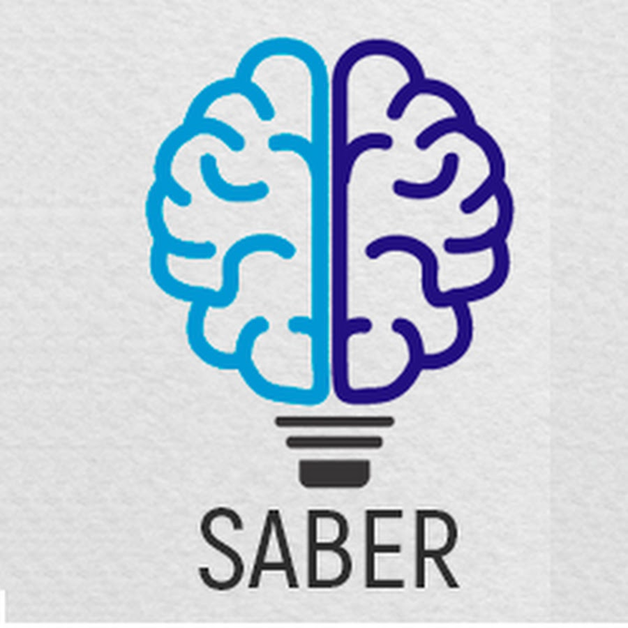
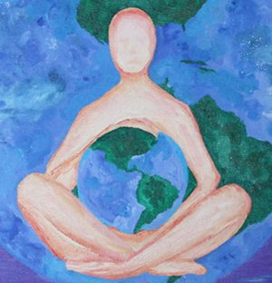
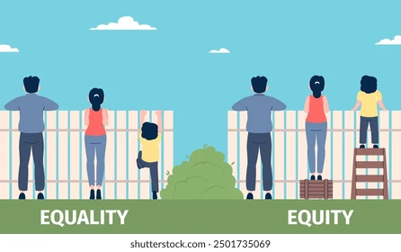

La Formación Profesional Integral es el proceso mediante el cual la persona adquiere y desarrolla de manera permanente conocimientos, destrezas y aptitudes e identifica, genera y asume valores y actitudes para su realización humana y su participación activa en el trabajo productivo y en la toma de decisiones sociales.
OBJETIVOS DE UN PERFIL PROFESIONAL
SABER
EL HACER
EL SER
Se orienta hacia el desarrollo de la originalidad, la creatividad, la capacidad crítica, el aprendizaje por procesos y la formación permanente.
Se involucra ciencia, tecnología y técnica, en función de un adecuado desempeño en el mundo de la producción.
Se orienta al desarrollo de actitudes acordes con la dignidad de la persona y con su proyección solidaria hacia los demás y hacia el mundo.


PRINCIPIOS DE UN PERFIL PROFESIONAL EN EL SENA
1. EL TRABAJO PRODUCTIVO: La aceptación de que el desarrollo de las facultades humanas se logra fundamentalmente a través del trabajo, esto es, mediante la transformación intencional que el hombre hace de su entorno físico y social.
2. LA FORMACIÓN PERMANENTE: El reconocimiento del derecho y el deber del sujeto en formación, de ser gestor de su propio desarrollo en todas las dimensiones a través de toda la vida, en razón a su cotidiana interacción con los demás y con el medio productivo.

3. LA EQUIDAD SOCIAL: Ofrece una gama de opciones formativas en condiciones adecuadas de acceso, permanencia o tránsito, según las posibilidades, inclinaciones y conveniencia de las personas de manera gratuita y oportuna.
4. LA INTEGRALIDAD: Concibe la formación como un equilibrio entre lo tecnológico y lo social; comprende el obrar tecnológico en armonía con el entendimiento de la realidad social económica, política, cultural, estética, ambiental y del actuar práctico moral.
CARACTERÍSTICAS DE UN BUEN PERFIL PROFESIONAL Y CÓMO CREARLOESTRUCTURA ORGANIZACIONAL DEL SENA